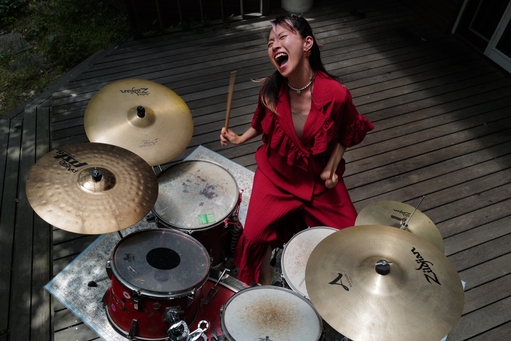

PIKA☆UNIA ／ 解放のドラム 90分体験会
人は、解放なしには生きていけない。
本音を叫ぶ90分。大阪・東京 — 完全無料リアル体験、受付中。
──それは、あなたの身体が、
そろそろ本音を出したい、というサインを送っている。
本音を抑え込んで、笑顔で凌いで、いい人で居続けて。
そうやって積み重なった「飲み込んだもの」は、
どこにも消えない。身体の奥に、溜まり続ける。
解放されないものは、いつかあなたを止める。
夢も、人生も、すべて。
だから、出す。
全部、出す。
本来の自分に、戻る。
— 90 minutes, 5 steps —
⓪から⑤まで、段階的にあなたを「本来の自分」へと連れて行く。
頭で考えるのではなく、身体で、知る。
本当の自分の夢を書き出す。今、自分がどこにいるのか、何を感じているのか。これが、すべての起点。
力を抜くことで、息が戻ってくる。縮こまっていた意識が、ほどけていく。意識を「解放」のほうへ。
頭で考えるより先に、動く。意識と身体で、その場の空気ごと変わっていく。
全身でドラムの音を浴びる。自分の鼓動と重なって、自然に身体が動き、声が出てくる。
爆音の中で、内側に溜め込んできた本音を、全部出す。
本当の夢を思い出して、その夢を止めているものを、叫んで爆破させる。
怒り、悲しみ、苦しみ。言葉にならなくても、いい。
解放の余韻の中で、PIKA☆の人生を通して、身体の解放と覚醒を学ぶ。
— Mechanism —
解放のドラムの爆音の中では、
自分の声さえ、聞こえない。
思考が、止まる。
残るのは、身体の感覚だけ。
そこに残っているのは、ありのままの自分。
その自分を、認める。
そして、解き放つ。
安心して、ぶつける。
──それが、
愛着の土台が再形成される、ということ。
考えるのではなく、身体で、知る。
本来の自分に、戻る。
なぜ、PIKA☆UNIA が生まれたのか
プロドラマーとして、大型野外フェスのステージにも立ってきた。
でも、SNSビジネスで年商1400万を達成したとき、
わたしは、気づいてしまった。
「お金を追うと、自分を忘れる」
2023年3月30日、太陽の塔の前。
夢中で生きていたら、辿り着いた使命があった。
それが、PIKA☆UNIA。
ステージで20年、わたしがやってきたことは、本音を叫ぶこと。
わたしは、本音を叫ぶプロだ。
ドラムボーカル20年で培った「本音を叫ぶ技術」を、
あなたの身体に、90分で手渡す。
まず自分を解放して、それを見た人の中にも"音"が生まれて、広がっていく。
それが、わたしの人生そのもの。
— Track Record —
ステージで20年、本音を叫び続けてきたプロが、
直接、爆音を浴びせる。
— Voices —
爆音のあとに残ったのは、ありのままの自分だった。
会場で本音を解き放った人たちの声。
— Schedule —
大阪・東京で、毎週開催。
会場の正式住所と日時は、LINE登録後にお届けします。
心斎橋・本町エリア
平日夜 ／ 週末昼
渋谷・表参道エリア
平日夜 ／ 週末昼
※ 会場の詳細住所は、参加者の安全のため LINE 登録者のみへお伝えしています。
LINEで最新日程と会場を受け取る— Free Real Experience —
完全無料 ／ お一人さま1回限り ／ 大阪・東京
今、あなたが受け取れること
これ全部、無料。
ただし、お一人さま1回。
※ LINE追加後、最新スケジュールをお送りします。
※ 強制参加・営業連絡はありません。
— FAQ —
解放のドラムは「叩く音」ではない。爆音の中で思考が止まり、身体感覚だけが残る90分の構造。その状態でしか触れられない「本来の自分」がある。
「劇的に変わる」とは約束しません。ただ、ヨガでも瞑想でも届かなかった「奥」に、ドラムの爆音だけが届く瞬間がある。400回以上のセッションで、ほぼ全員が体感している。
出さなくて、いい。爆音の中では、自分の声さえ聞こえない。叫ぶことが目的ではなく、思考が止まることが目的。
スピリチュアル用語は使いません。PIKA☆は20年のプロドラマー。身体性とドラムだけで構築されたメソッド。宗教でも瞑想でも、エネルギーワークでもない。
90分の最後にPIKA☆UNIA本プログラムのご案内はあります。ただし、強制ではありません。体験会そのものに価値があるように設計しています。
基本的に女性参加者中心です。男性の参加可否は、LINE登録後に個別にご案内します。
できません。解放のドラム生音体験は、デジタルでは絶対に再現できない核です。対面のみで開催しています。
動きやすい服装、スニーカー推奨。お水をご持参ください。